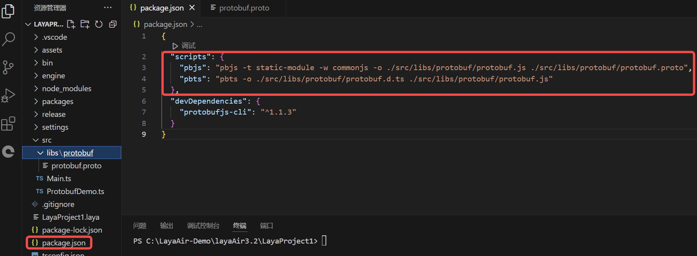
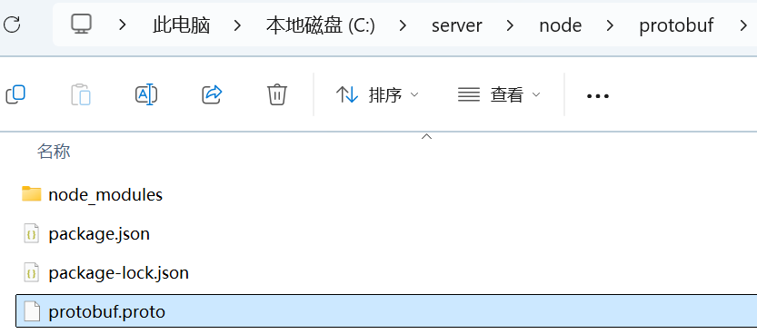
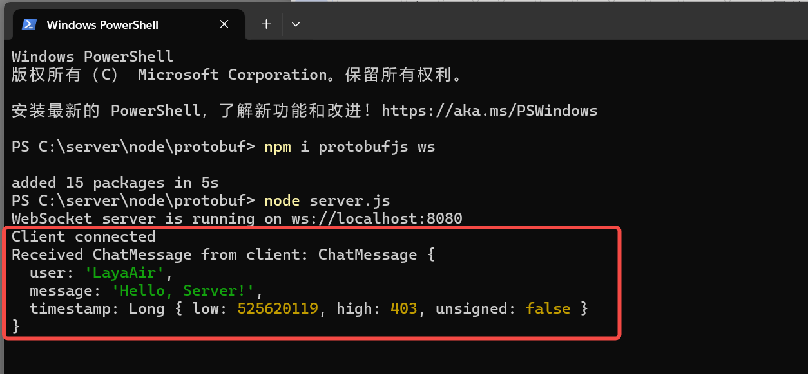

ProtocolBuffer通信
Author: Charley
Protocol Buffers（简称 Protobuf）是谷歌开发的一种高效、灵活且轻便的数据序列化格式。
它主要用于结构化数据的序列化和反序列化。在数据传输和存储场景中，Protobuf 能够将复杂的数据结构（如包含多种数据类型的对象，像是包含整数、字符串、嵌套对象、数组等）转换为紧凑的二进制格式，大大减少了数据的体积，这对于网络传输来说能够降低带宽占用并且提高传输速度。而且在序列化后的二进制数据进行反序列化时，能够精准地还原出原始的数据结构和数据值。
与其他数据序列化格式（如 XML 和 JSON）相比，Protobuf 具有更高的性能。它的二进制格式使得解析速度更快，并且因为其定义的消息结构是强类型的，在编译阶段就可以对消息格式进行检查，减少了运行时错误。此外，通过.proto文件可以清晰地定义消息的结构，包括消息中的字段、字段类型、是否为必需字段等信息，这种定义方式方便团队协作开发，并且易于维护和更新数据结构的定义。
一、Protobuf的准备工作
1.1 安装 protobufjs-cli
首先，随便打开一个命令行，通过npm安装protobufjs-cli，用于生成静态代码等。
npm install protobufjs-cli --save-dev

(图1-1)
npm 环境都没有的，请先安装好 Node.js 后再继续阅读。
1.2 编写.proto文件
.proto 文件用于定义数据结构和消息格式，它是 Protobuf 的核心，客户端与服务端都基于该文件协议进行通信。在 chat.proto 文件中，开发者需要定义消息的结构、字段的类型、字段名、字段的编号等。
我们在项目根目录\src\libs\protobuf\目录下创建一个protobuf.proto空文件，然后用编辑器打开，并编写如下示例代码：
syntax = "proto3"; // 指定使用 Protobuf 3 语法
// 定义一个 ChatMessage 消息
message ChatMessage {
string user = 1; // 用户名，字段编号是 1
string message = 2; // 消息内容，字段编号是 2
int64 timestamp = 3; // 消息时间戳，字段编号是 3
}
各个部分的作用：
syntax = "proto3";：指定使用 Protobuf 3 语法。proto3是 Protobuf 写本文时的最新版本，具有简化的语法和更广泛的支持。message：定义了一个消息结构。每个消息是一个包含多个字段的数据结构。string、int32、int64等：指定字段的类型，Protobuf 支持多种数据类型，如字符串、整数、浮动点数等。
更多关于.proto的使用，请自行百度搜索相关教程，本篇文档仅作基础流程的使用说明指引。
1.3 生成 .js 和 .d.ts 文件
通过 protobufjs-cli 工具生成的 .js 和 .d.ts 文件是根据 .proto 文件按需生成的，只包含项目 .proto 文件中定义的消息类型和字段所需，而不会包含整个 protobufjs 库的内容。因此，与官方提供的完整js库相比，按需生成的文件通常更轻量，所在本文中仅介绍该种方式的使用流程。
1.3.1 配置工具指令
protobufjs-cli工具有pbjs和pbts这两个指令，分别用于生成JavaScript 库文件.js和TypeScript 声明文件.d.ts。由于指令参数较多，通常会配置在项目中，直接调用快捷指令即可。
示例代码如下：
"scripts": {
"pbjs": "pbjs -t static-module -w commonjs -o ./src/libs/protobuf/protobuf.js ./src/libs/protobuf/protobuf.proto",
"pbts": "pbts -o ./src/libs/protobuf/protobuf.d.ts ./src/libs/protobuf/protobuf.js"
},
效果如图1-2所示：

pbjs指令参数的作用：
将 .proto 文件编译为 JavaScript 文件。生成的 .js 文件包含所有消息类型的定义和序列化方法，适合直接在项目中使用。
-t static-module-t：指定生成代码的目标类型，即目标代码的格式。static-module：表示生成“静态模块”代码，它直接将.proto文件中的内容转化为 JavaScript 模块，而不是生成动态消息类。 使用static-module可以在没有protobufjs库的情况下直接使用生成的代码。对于文件较少或模块化需求明确的情况，这种方式更高效。
-w commonjs-w：指定生成模块的代码风格。commonjs：表示生成符合 CommonJS 规范的代码，适合使用require导入的项目。
-o ./src/libs/protobuf/protobuf.js-o：指定输出文件路径。./src/libs/protobuf/protobuf.js：这是编译后生成的 JavaScript 文件路径。 在运行pbjs命令后，所有的.proto文件内容会被编译到这个protobuf.js文件中。
./src/libs/protobuf/protobuf.proto这是需要编译的
.proto文件路径。该文件包含我们之前定义的消息格式和结构。
pbts 指令参数的作用：
根据生成的 .js 文件生成 TypeScript 类型声明文件。.d.ts 文件包含对应的类型定义，使 TypeScript 项目获得完整的类型支持。
-o ./src/libs/protobuf/protobuf.d.ts-o：指定输出文件路径。./src/libs/protobuf/protobuf.d.ts：这是生成的.d.ts文件的路径，包含所有生成的类型定义。 此文件将定义所有的消息类型、字段和方法，以便在 TypeScript 项目中获得类型提示和编译检查。
./src/libs/protobuf/protobuf.js这是前一个命令生成的
protobuf.js文件的路径，pbts会读取这个文件内容来生成相应的.d.ts文件。.d.ts文件包含与.proto文件中定义的结构相对应的 TypeScript 类型，方便在 TypeScript 项目中直接使用。
1.3.2 生成文件
由于pbts指令需要依赖于pbjs指令生成的protobuf.js，所以我们先执行pbjs的指令，
npm run pbjs
然后执行pbts的指令。
npm run pbts
两次指令执行完，可以看到指定的输出路径下生成了protobuf.js和protobuf.d.ts两个文件，如图1-3所示

（图1-3）
二、编码使用Protobuf
2.1 创建脚本导入Protobuf
当生成了protobuf.js和protobuf.d.ts之后，我们就可以直接在ts的项目中直接使用了。
我们先为场景添加一个空的脚本，命名为ProtobufDemo，如图2-1所示。

（图2-1）
脚本不会创建的先阅读官方的相关基础文档。
然后基于当前的脚本路径，直接去引入生成的protobuf模块即可。如下面的代码所示：
// src/ProtobufDemo.ts
// 引入生成的 protobuf 模块，路径相对于当前文件
import * as protobuf from "./libs/protobuf/protobuf";
const { regClass } = Laya;
@regClass()
export class ProtobufDemo extends Laya.Script {
onEnable() {
console.log("Game start");
}
}
2.2 Protobuf示例脚本
引入了protobuf模块就可以直接在项目中使用了，这里我们写了一个简单的示例DEMO，完整代码如下：
// src/ProtobufDemo.ts
// 引入生成的 protobuf 模块，路径相对于当前文件
import * as protobuf from "./libs/protobuf/protobuf";
const { regClass } = Laya;
@regClass()
export class ProtobufDemo extends Laya.Script {
private ChatMessage: any;
private socket: WebSocket | null = null;
onStart() {
console.log("Game start");
// 初始化 protobuf
this.initializeProtobuf();
// 初始化 WebSocket 连接
this.initializeWebSocket();
}
// 初始化 protobuf 并加载消息定义
private initializeProtobuf() {
// ChatMessage 是 .proto 文件中定义的消息类型，包含了字段 user、message 和 timestamp，分别用于表示用户名、消息内容和时间戳。
this.ChatMessage = protobuf.ChatMessage;
}
// 初始化 WebSocket 并处理消息
private initializeWebSocket() {
this.socket = new WebSocket("ws://localhost:8080");
this.socket.binaryType = "arraybuffer";
// 连接成功时发送测试消息
this.socket.onopen = () => {
console.log("WebSocket connected");
// 发送 ChatMessage 类型的打招呼消息，user 字段表示消息发送者的用户名。message 字段包含消息内容。timestamp 是当前时间戳。
const greetingMessage = { user: "LayaAir", message: "Hello, Server!", timestamp: Date.now() };
//调用 encode 方法，将 greetingMessage 对象编码为二进制格式（即序列化），通过.finish()返回一个 Uint8Array类型的二进制缓冲区。
const greetingBuffer = this.ChatMessage.encode(greetingMessage).finish();
//socket不为 null 或 undefined时，将二进制数据 greetingBuffer 通过 WebSocket 发送到服务器。
this.socket?.send(greetingBuffer);
};
// 接收服务器返回的消息
this.socket.onmessage = (event) => {
//将 event.data 转换为 Uint8Array 类型，以便传递给解码函数 handleServerResponse 进行处理。
const buffer = new Uint8Array(event.data);
this.handleServerResponse(buffer);
};
// 连接关闭处理
this.socket.onclose = () => {
console.log("WebSocket closed");
};
// 连接错误处理
this.socket.onerror = (error) => {
console.error("WebSocket error:", error);
};
}
private handleServerResponse(buffer: Uint8Array) {
// 尝试解码为 ChatMessage，使用 decode 方法，将接收到的 Uint8Array 数据 buffer 反序列化为 ChatMessage 类型的 JavaScript 对象。
const chatMessage = this.ChatMessage.decode(buffer);
console.log("Received ChatMessage from server:", chatMessage);
}
}
代码中已加入详细的注释，这里就不再详细分析了。
三、测试Protobuf通信
3.1 搭建一个简单的服务器环境
Protobuf通信自然是离不开服务端，所以我们先基于node搭建一个简单的服务器。
首先，我们随便找一个目录，使用npm安装WebSocket 服务器模块ws用于发送和接收二进制数据等基础的双向通信，以及安装Protobuf模块protobufjs，确保双方能够正确解析消息。
npm install protobufjs ws
执行完安装命令后，我们可以看到多出来的node_modules目录下已经成功的完成了protobufjs和ws模块的安装，如图3-1所示。

（图3-1）
3.2 建立.proto 文件
在服务器端，创建一个与客户端相同的 .proto 文件，以便服务器也能解析和生成 Protobuf 格式的数据。我们可以直接将客户端的 protobuf.proto 文件复制到服务器项目中。确保该文件与客户端定义的一致性，以便双方能使用相同的结构进行通信。
示例的目录结构如图3-2所示。

(图3-2)
3.3 编写服务端代码
接下来，创建一个简单的 WebSocket 服务器，使用 ws 模块来处理连接请求，并用 protobufjs 来加载处理 .proto 文件中的定义，以便对接收的数据进行解码和响应。
示例 server.js 文件：
//C:\server\node\protobuf\server.js
const WebSocket = require("ws");
const protobuf = require("protobufjs");
// 加载 .proto 文件，与客户端一致
protobuf.load("./protobuf.proto", (err, root) => {
if (err) throw err;
// 获取消息类型
const ChatMessage = root.lookupType("ChatMessage");
// 创建 WebSocket 服务器，并定义了8080端口，需要与客户端请求的端口保持一致
const wss = new WebSocket.Server({ port: 8080 });
wss.on("connection", (ws) => {
console.log("Client connected");
// 监听消息
ws.on("message", (data) => {
// 将接收到的二进制数据buffer解码(反序列化)为ChatMessage对象
const receivedMessage = ChatMessage.decode(new Uint8Array(data));
console.log("Received ChatMessage from client:", receivedMessage);
// 回复一个打招呼消息
const responseMessage = { user: "Server", message: `Hello, ${receivedMessage.user}!`, timestamp: Date.now() };
const responseBuffer = ChatMessage.encode(responseMessage).finish();
ws.send(responseBuffer);
});
// 监听关闭事件
ws.on("close", () => {
console.log("Client disconnected");
});
});
console.log("WebSocket server is running on ws://localhost:8080");
});
3.4 执行测试代码
完成代码编写后，我们在命令行中，使用node在服务器目录中启动服务端代码，
node server.js
运行后效果如图3-3所示。

(图3-3)
由于客户端的脚本我们在前文中是基于场景创建的，那么我们也可以直接运行场景，在预览运行界面，我们打开开发者工具的控制台，可以看到客户端成功联结上服务端，并且还收到了来自服务端返回的消息。如图3-4所示。

(图3-4)
我们再切回到服务端的命令行界面，也可以看到来自客户端消息的打印信息，如图3-5所示。

(图3-5)
至此，一个在LayaAir3项目内，基于Protobuf通信的完整流程已验证通过。